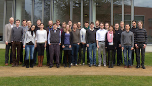

ZEUS Workshop 2014
Sixth Central European Workshop on Services and their Composition
February 20-21, 2014, Potsdam, Germany
Program
Thursday, February 20, 2014
- 9:15 Registration
- 10:00 Welcome
- 10:15 Warm-Up
- 10:45 Keynote: Ulf Leser. Research Opportunities in Scientific Workflows
- 12:15 Lunch at Ulf's Café
- 13:15 Session 1: Process Analysis
Marigianna Skouradaki, Dieter H. Roller, Cesare Pautasso and Frank Leymann.
“BPELanon”: Anonymizing BPEL Processes.
Niels Lohmann.
Where did I go wrong? - Explaining errors in business process models.
Thomas Heinze, Wolfram Amme and Simon Moser.
Message Assertions and Predicate-Based Control-Flow Unfolding Revisited.
- 14:45 Coffee Break
- 15:00 Session 2: Process Modeling and Improvement
Ekaterina Bazhenova.
Support of Decision Tasks in Business Process Improvement
Marcin Hewelt and Aaron Kunde.
Integration of Documentation Task into Medical Treatment Processes in the Hospital
- 16:00 First Day Closing
- 18:00 Social Event (outside, bring warm clothes)
- 19:00 Workshop Dinner
Friday, February 21, 2014
- 8:30 Breakfast (Coffee)
- 9:00 Session 3: Flexible Processes
Jörg Lenhard.
Towards Quantifying the Adaptability of Executable BPMN Processes.
Robert Prüfer and Jan Sürmeli.
Introducing Configurability into Scenario-Based Specification of Business Processes.
C. Timurhan Sungur, Oliver Kopp and Frank Leymann.
Supporting Informal Processes.
- 10:30 Coffee Break
- 10:45 Session 4: Process Execution
Christian R. Preißinger, Simon Harrer, Stephan J. A. Schuberth, David Bimamisa and Guido Wirtz
Towards Standard Conformant BPEL Engines: The Case of Static Analysis
Philipp Hoenisch
ViePEP - A BPMS for Elastic Processes.
Uwe Breitenbücher, Tobias Binz, Oliver Kopp and Frank Leymann
Vinothek – A Self-Service Portal for TOSCA
- 12:15 Lunch at Ulf's Café
- 10:45 Session 5: Process Data
Daniel Ritter.
What About Database-centric Enterprise Application Integration?
Gregor Grambow, Nicolas Mundbrod, Vivian Steller and Manfred Reichert.
Towards Process-based Composition of Activities for Collecting Data in Supply Chains.
- 14:15 Closing

Workshop
Local Organizers
Proceedings